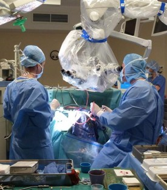

SPÉCIALITÉ
Nous vous proposons plus de 25 spécialités
-

chirurgie générale
Chirurgie orthopédique et traumatologie
Chirurgie urologique
Médecine interne
Chirurgie thoracique
Chirurgie cardiaque et vasculaire
Urgences -
Chirurgie plastique reconstructrice et esthétique
Chirurgie maxillo-faciale et stomatologie
Ophtalmologie
Oto-rhino-laryngologie (O.R.L)
Génétique médicale
Anatomie et cytologie pathologiques
Médecine dentaire
Pédopsychiatrie
Pédiatrie et Néonatologie
Psychiatrie
Rhumatologie
Infectiologie
votre santé
est notre responsabilité.Faire une consultation médicale en ligne
Poser vos questions a nos doctures
PRENEZ VOS RENDEZ-VOUS MÉDICAUX EN LIGNE FACILEMENT, RAPIDEMENT ET GRATUITEMENT 7J/7 - 24H/24